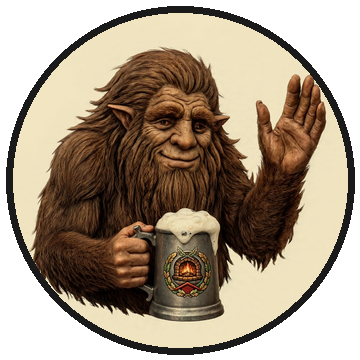
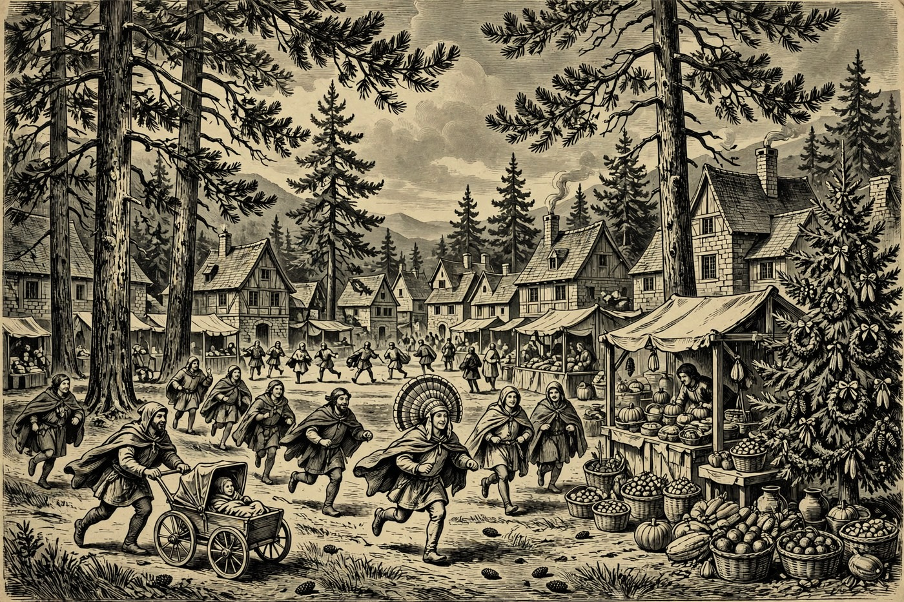
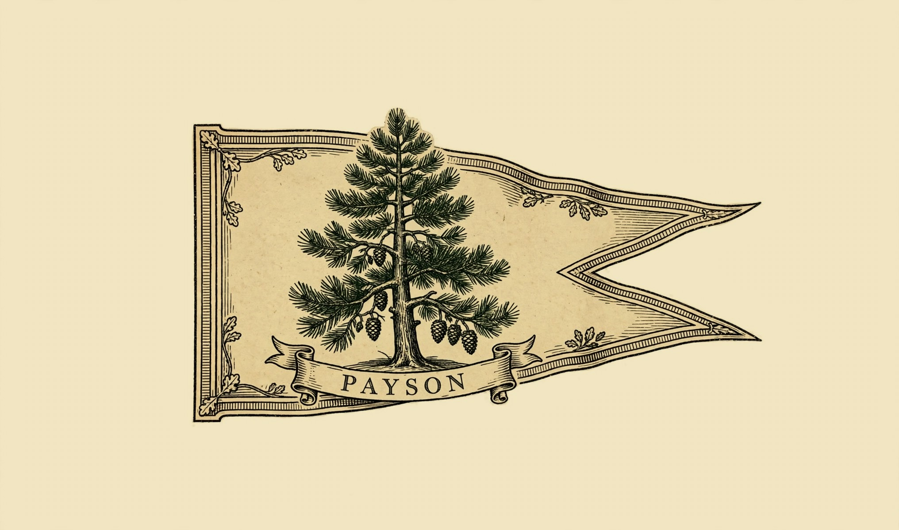
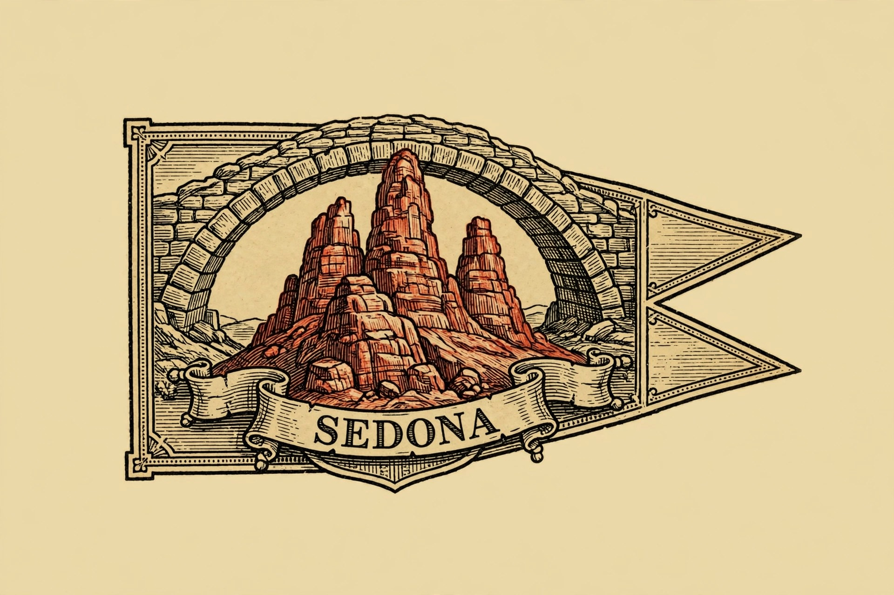
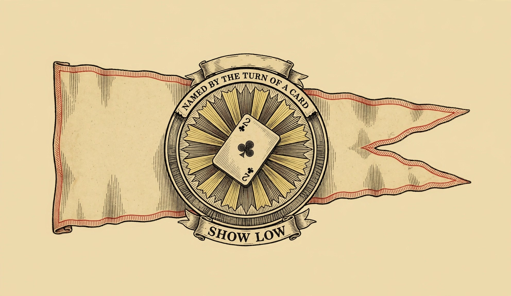
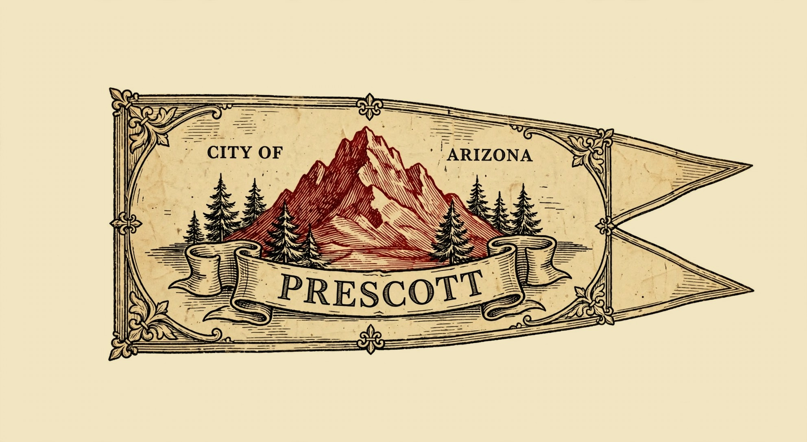

By Muggy · Payson, Ariz.
PAYSON — Hail, wayfarer, and pull up a bench — Loredas has come in cool and grey over the pines, with one bright sunbreak promised by noon and a whole Hold determined to make the most of it. Payson trots at dawn in Green Valley Park and throws open the Showdown at the Event Center, Camp Verde fills a vintage mall with a hundred small shops, Sedona drums at the Posse Grounds and raises coin for flood-hit neighbors, Show Low tosses discs for its food bank, and Prescott’s Festival of Trees burns its last and brightest day. And ahead, friends, looms the feast week itself — free Thanksgiving tables in Payson and Sedona on Thursday, and Santa already packing for Pine on Friday.
Happening in the Holds Today

Payson— Payson Turkey Trot — Green Valley Park, 1000 W. Country Club Dr., 8:00 AM. The Hold’s beloved pre-feast fun run returns to the park paths, and it is built for everybody: keen runners, cheerful walkers, and families pushing decorated strollers all share the course. Prizes await the fastest stroller and the best themed outfit, so turkey hats and pilgrim bonnets are very much in order. Event shirts go while supplies last, so early birds dress best. Sign up through Payson Parks and Recreation or at the Parks and Rec office at Green Valley Park — and earn Thursday’s pie honestly.— Payson Showdown — Payson Event Center, from 11:00 AM. The Event Center throws open its doors for the Showdown, with vendors and food trucks gathered under one roof and the whole town invited to wander, graze, and shop. It makes a fine second act to a Turkey Trot morning: warm up at the park, then refuel among the stalls. Bring an appetite and a little coin for the makers. The fresh flyer is out and the word is spread — come see what the fuss is about. Camp Verde— Sunshine & Gratitude Daytime Vendor Market — Ruby Road Vintage Mall, 851 E. Howards Rd., 10:00 AM–3:00 PM, free entry. A beautiful fall market supporting a collection of some 100 small businesses, between the special event vendors outside and the booths inside the mall. Food trucks, live music, services, and shopping fill the day — a gratitude-season bazaar where a guest can outfit a whole gift list in one stop. Come hungry and leave laden.— Octoberfest in November — Astoria International Bistro, 348 S. Main St., 6:30 PM, one show only. Camp Verde celebrates a month late and not one bit sorry: the one-man band Marco Kavticnic brings German music, German food, and German drink to the bistro for a single rousing night. Expect oompah cheer, hearty plates, and a hall full of neighbors glad of any excuse. Reservations are required, so call ahead before you set out down the valley road.
Camp Verde— Sunshine & Gratitude Daytime Vendor Market — Ruby Road Vintage Mall, 851 E. Howards Rd., 10:00 AM–3:00 PM, free entry. A beautiful fall market supporting a collection of some 100 small businesses, between the special event vendors outside and the booths inside the mall. Food trucks, live music, services, and shopping fill the day — a gratitude-season bazaar where a guest can outfit a whole gift list in one stop. Come hungry and leave laden.— Octoberfest in November — Astoria International Bistro, 348 S. Main St., 6:30 PM, one show only. Camp Verde celebrates a month late and not one bit sorry: the one-man band Marco Kavticnic brings German music, German food, and German drink to the bistro for a single rousing night. Expect oompah cheer, hearty plates, and a hall full of neighbors glad of any excuse. Reservations are required, so call ahead before you set out down the valley road.
Sedona— Free To Be Me Drumming — Posse Grounds Pavilion, 12:00–2:00 PM. Sedona Parks and Recreation invites one and all to the drum circle: two hours of rhythm, connection, and plain joy under the pavilion roof. No experience is needed — the beat carries beginners along, and the circle is famous for turning strangers into a band by the second song. Bring your own drum if you have one, or simply bring your hands and your good cheer. A fine midday stop between the red rocks.— Helping the Hive at PJ’s — PJ’s Pub, 6:00–9:00 PM. A benefit night with a big heart: the band donates all its pay and tips, and half of shirt-sale proceeds go to neighbors affected by the flooding earlier this month. Good music, good company, and every coin doing double duty — the mead-hall way of looking after your own. Valley Dwellers up for the weekend will find no warmer welcome in the Verde Valley. Come thirsty, tip gladly, and help the hive.— On the Fly: The Essentials of Fly Fishing — Rainbow Trout Farm, 3500 N. State Route 89A, 1:30 PM. Tailwater Fly Co. teaches an introduction to fly fishing built for every age and skill level, on private water along the creek. You will leave knowing how to catch fish anywhere — casting, knots, and reading the water, taught by folks who love the sport. A splendid way for a Hearth guest to spend a grey afternoon. Waders optional; curiosity required.
Show Low— Show Low Turkey Toss 2026 — Show Low City Park disc golf course; check-in 9:00 AM, shotgun start 10:00 AM. A charity disc golf day benefiting the White Mountain Community Food Bank: one round of 25 holes for only $10 a player, and every coin goes to the food bank. Trophies await the sharpest arms, and there is even a chance to win yourself a turkey for the feast table. Friendly, outdoors, and for a good cause — details also stand at discgolfscene.com. Bring your discs and your best throwing arm.— Woodland Wellness Open House — 1500 S. White Mountain Rd., Suite 401A, 11:00 AM–2:00 PM. Show Low’s new therapeutic wellness center opens its doors and invites the town to wander through: tour the treatment rooms and the couples suite, meet the practitioners, and see what calm looks like with an address. A gentle, curious kind of Saturday stop — part open house, part deep breath. Neighbors and travelers alike are welcome to come look around.— Pre-Cut Stained Glass Christmas Ornament Class — 251 N. Penrod Rd., from 11:00 AM. Ho ho ho, indeed: make your own stained glass Christmas ornaments, choosing two pre-cut pieces — the glass is cut and ground for you, and you do the copper foiling and soldering. It is a true beginner’s class, and you go home with ornaments of your own making for the tree. A merry maker’s morning, and a gift no shop can sell you.
Prescott— Festival of Trees Prescott — Final Day — Sam Hill Warehouse, 232 N. Granite St., 10:00 AM–8:00 PM; adults $10, children $2. Today is the last day of the ninth annual festival in Arizona’s Christmas City: the historic warehouse stands filled with one-of-a-kind decorated trees and wreaths by local businesses and groups, with People’s Choice voting, Santa visits, children’s crafts, raffles, and live entertainment. Every coin of net proceeds goes to the Eric Marsh Foundation, which supports firefighters and their families. If you mean to see the forest, traveler, today is the day — by dark it is gone.— Nosferatu: A Shadow Musical — Cosmos Theatre, 222 N. Marina St., 2:00 PM (the run closes Sunday, Nov. 22). Count Orlok is back: the shadow musical returns to the stage with its eerie, beautiful play of light and silhouette. A deliciously spooky matinee for a grey November afternoon — vampires before supper, home by dark. The production runs November 19–22, so this weekend is your last chance to be properly haunted.— Thanksgiving Cornucopia Class — 600 Miller Valley Rd., 1:00 PM; $125 per person, or $110 if you reuse last time’s cornucopia. Design and build your own Thanksgiving cornucopia floral arrangement, with all materials and instruction provided — and cocktails served while you work. You will carry home a centerpiece fit for the feast table and the skills to do it again next year. A flowery, festive way to spend a Saturday afternoon.
The Days Ahead
- Sun, Nov. 22— Friendsgiving at Strawberry Chapel — 8579 W. Fossil Creek Rd., Strawberry, 4:00 PM. The chapel’s annual Friendsgiving opens its doors to the whole twin-village Hold: bring your appetite and your gratitude, and sup with neighbors before the feast week begins in earnest.— Women’s Descending & Drops Clinic — Sedona Bike Skills Park, from 10:00 AM. Sedona’s red-rock trails offer downhill features found almost nowhere else, and this women’s clinic teaches descending and drops on that famous slickrock with expert coaching. For riders ready to let gravity become a friend.
- Mon, Nov. 23— Ecumenical Thanksgiving Service — Unity of Payson, 904 N. Beeline Hwy., Suite E, 1:30 PM, and on Zoom. All of Payson’s faiths gather under one roof to give thanks together before the feast — all are welcome, in person or from the fireside.— Open Mic Night: Music with a Purpose — THAT Brewery & Pub, 3270 N. Highway 87, Pine, evening. Community, music, and giving back come together in the pines: open mic hosted by rotating members of the Fuel Reduction Team, so every song also serves the forest. Singers, pickers, and listeners all welcome.
- Tue, Nov. 24— Trail Day Volunteer Build — Pine, on Highway 87. Don’t just use the trail — help build it. Pine-Strawberry Fuel Reduction calls all hikers, bikers, runners, and community members to clear brush and move rock on the trails the whole Hold walks. Honest work, good company, and a forest safer for it.
- Wed, Nov. 25— The Great Turkey Giveaway — Old Town Mission, 116 E. Pinal St., Cottonwood, from 9:00 AM. Neighbors helping neighbors: the Old Town Mission provides a free holiday food option to Verde Valley families, with eligible households choosing the feast fixings that suit them best. A bright errand of mercy on the day before Thanksgiving.
- Thu, Nov. 26— Free Community Thanksgiving Dinner — Payson Elks Lodge #2154 — 1206 N. Beeline Hwy., Payson. For more than 26 years the Elks have set a free Thanksgiving table of turkey, sides, and pies for the whole town — in past years served 11:30 AM to 2:30 PM, with volunteers delivering to homebound residents. No one in the Hold need feast alone. Call 928-474-2572 to confirm this year’s hours.— Free Thanksgiving Dinner & Kirtan Concert — St. Andrew’s Parish Hall, 100 Arroyo Pinon Dr., Sedona, 3:00–8:30 PM. A beloved Sedona tradition: a free traditional vegetarian Thanksgiving feast with all the trimmings and dessert, followed by an evening of live kirtan music from leaders around the country. Free and open to all — RSVP by text to 928-399-9853.
- Fri, Nov. 27— Santa’s Workshop at The Rusty Pine Cone — 3788 N. AZ Highway 87, Pine, from 11:00 AM (Santa’s hours 10:30 AM–3:00 PM). Santa and Mrs. Claus come to Pine for a magical holiday celebration, with “Shopping with the Elves” — a special shop where children pick out secret gifts with an elf’s help for Mom, Dad, Grandma, and Grandpa. Free photos, hot cocoa, and a special gift from Santa himself. Santa returns Saturdays Nov. 28, Dec. 5, 12, and 19 — but the season opens Friday, and Pine will be glowing.